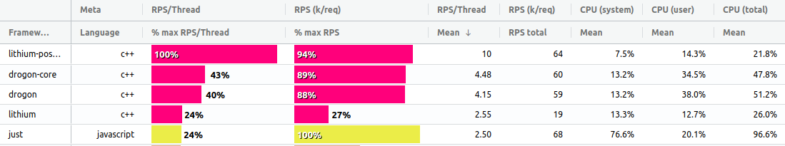
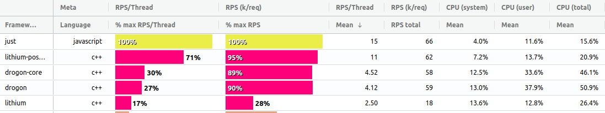

This question was recently asked on github, prompted by the arrival of a new javascript platform near the summit of the intermediate techempower rankings. This platform, Just(js), is something I have been hacking on as a side-project for some time now. Here I will attempt to give a brief answer to the question and will be following up with some further detail on this and the platform itself over the coming weeks.
If you find yourself getting hot under the collar reading this, please check the caveats below before going any further.
The techempower rankings have been running since 2013 and have become a very useful tool for a number of reasons.
Just(js) is a small, simple and hopefully efficient javascript server side framework built on top of the google v8 javascript engine. Currently it supports modern linux on x86_64 only. It is still quite a way from a stable beta but I am not expecting any big changes to functionality and the code base is very small (approx 5k lines of c++ and javascript) so it should not be a huge amount of work to bring it to some kind of stable state.
I will go into more detail in future posts on the rationale and motivations behind it but for now I can say the main goals are to:
Okay, Okay! Here are the top 10 frameworks from the latest techempower intermediate run. Please read the caveats to understand why these results should be taken with a little skepticism for now.
Intermediate Results Top 10
You can see the full results here.
There are a few things we can note:
When comparing to other Javascript frameworks the difference becomes quite stark.
Results for Javascript Frameworks
Well, it was a lot of hard work. My initial attempts, which I benchmarked on my laptop against the best C++, Rust and Javascript frameworks were so-so.
Results of Inital Local Tests
I was only seeing 50% of the best performers, with particularly bad scores for the multi-query, update and fortunes tests, which are the most relevant ones to real-world scenarios.
Detail of Initial Local Tests
I wasn't too disappointed by that and still had plenty of room for optimizations and a strong instinct that big improvements could be made, so I set to work.
My initial attempt was using a C++ module interfacing with the official libpq c api. I did a lot of testing and traffic analysis against this and came up against bottlenecks I could not explain so decided to abandon it and try to write a Javascript library to interface with Postgres instead. I later discovered (by examining the source code of the other frameworks) that there is a patchset for libpq which resolves these issues so I may revisit the C++ binding in the future.
After a number of days poring over the postgres docs and testing, I was happy with the surprisingly good results I was seeing from the Javascript code i put together. I had to work hard to ensure I was doing as few heap allocations as possible and implemented many optimizations like being able to pre-compile the queries into ArrayBuffers and using prepared statements in Postgres, which is much faster than doing raw Sql queries.
Here is a little snippet of How the pre-compiled queries work:
sock.allFortunes = await compile(sock, {
formats: [],
sql: 'select * from Fortune',
fields: [{ format: 1, oid: INT4OID }, { format: 0, oid: VARCHAROID }],
name: 's2',
portal: '',
maxRows: 0,
htmlEscape: true,
params: []
})
and how this is called:
const { allFortunes } = sock
allFortunes.call(() => {
const html = getHTML(insertionSort([extra, ...allFortunes.getRows()]))
sock.writeString(`${rHTML}${utf8Length(html)}${END}${html}`)
})
I also added some further optimizations which allowed me to squeeze out a few more drops of performance:
Techempower run the tests on 3 Dell R440 servers, each of which has an Intel Xeon Gold 5120 CPU with 28 threads and a dedicated Cisco 10Gbps ethernet adapter.
The framework being tested runs on one machine, the database on another and the benchmarking tool (which uses wrk) runs on the third. Everything runs inside of docker using Host networking so the overhead from that should be minimal.
Having done all this work, I was now seeing Just(js) match the top performing frameworks on my local tests so was reasonably confident I could score well in the production techempower environment.
Final Results of Local Tests
I submitted my pull request, had it reviewed and accepted and then waited anxiously while the techempower servers churned through the tests. The total run takes about 5 days each time so I was hugely disappointed when my initial submission failed on the production run. This was down to DNS working differently in the production environment than it does in techempower's CI system and my code not handling this correctly.
I made some changes to the dns code to use /etc/resolv.conf and /etc/hosts to determine the IP address of the database once I realised the production environment was using the --add-host docker option to inject the database IP address into the container /etc/hosts file.
Thankfully, after some more anxious waiting, the tests were successful next time around but I was a little disappointed to see Just(js) had only placed 5th overall, scoring roughly 70% of the best performing framework.
Results of Initial Run on Techempower
After my intial disappointment, I decided this was actually quite a respectable score, with only lower level Rust and C++ frameworks scoring higher, so I took a break for a few days and pondered what could be causing the discrepancy between my local tests and the ones in the production environment.
With my batteries recharged, I decided to rent some time on a similarly specced server from Packet.com (now Equinix Metal) to see if i could reproduce the issue in a similar environment. After a lot of perf and strace investigation I noticed that there was a huge amount of system call overhead. This was being dominated by calls to pthread_mutex_lock and pthread_mutex_unlock, so I decided to dig into the v8 code to see what could be causing this.
I eventually tracked the issue down to this code. It seems that every time we call ArrayBuffer->GetBackingStore() v8 uses a mutex to avoid races on reading the backing memory. I am guessing this is because the GC runs on a separate thread but need to investigate further. I raise the issue on the v8-users google group and am hoping I can put together a reproducible issue report for the v8 team to look at.
At this point, I was really scratching my head as to what I could do but while testing on the packet server I noticed that the issue got worse the more threads I used. The initial submission was spawning a thread for each server instance so I decided to try using processes instead of threads.
This turned out to be the breakthrough I was hoping for and I saw a huge improvement on the packet server over the threaded approach. I am still not too sure why this is but my guess would be the v8 heap and/or GC are shared across the threads when using a thread for each v8 Isolate which means lots of contention on those mutexes reading from the ArrayBuffers.
After submitting my changes the next Techempower run showed a huge improvement. Just(js) was now placing 2nd overall and within 5% of the top performing framework, and has maintained its position on subsequent runs.
Improved Techempower Results
You can see the huge reduction in syscall overhead in these two graphs for the multi query test:
Syscall Overhead in Initial Results
Improved Results after Switch from Threads to Processes
That is showing a drop of 80% total CPU time just from switching from threads to processes. Hopefully I can get to the bottom of why this issue is happening when using the threaded approach as it consumes a lot less memory than a separate process per Isolate.
Now, let's take a look in some more detail at the individual tests and how Just(js) compares to other frameworks on those. I used this really nice tool which allows us to see more of the detail than the techempower website does. I also made some tweaks to it locally so I could see the Requests Per Second Per Thread which gives us a better insight into the relative performance than the raw RPS numbers.
I have chosen a subset of the frameworks for comparison here:
I am only discussing raw throughput and CPU usage below. I will hopefully be able to go into more detail on Memory and Latency results in a future post.
You can read more on the test requirements here.
The plaintext test is the simplest and probably the least useful one but it does give us some idea of raw performance of the HTTP parser, event loop and network apis. The results for this also come with a large caveat that the top performing frameworks all score around the same. This is because the 10Gbps network is saturated at 7m requests per second.
Detailed Plaintext Results
We can see from the RPS per thread numbers that there is quite a variance between the best performing frameworks even through their total RPS scores are similar.
Just(js) surprisingly comes out on top in this test, beating lithium (C++) by 3% on Request Per Second Per Thread. It beats the best performing Rust framework by 17%, C# by 27%, Java by 38%, Go by 50%, Javascript/Vert.x by 84% and Javascript/Node.js by 93%.
You can see the top 5 frameworks in this graph are not maxing out on CPU. This is because the network is the bottleneck on this test. Hopefully techempower will be able to run the tests on a faster network at some point or redesign the tests to address this shortcoming.
Just(js) is only using 50% of the available CPU (65% User, 35% System) to serve 7m requests / 10 Gb data transfer per second which indicates it could theoretically achieve near 14m requests per second or 20Gb/sec on 28 cores fully utilised. Those are some pretty amazing numbers for a language that tends to receive a lot of criticism for being sub-standard in performance on the server side at least.
I'm surprised Go and Java score as low as they do on this test so there may be some room for improvement in the benchmark implementations for those languages. I would also imagine there could be some optimisations made to the Node.js and PHP implementations.
The JSON test is a little more real-world than plaintext and gives us some idea of relative performance of JSON serialization across the tested frameworks.
Detailed JSON Results
In this test Just(js) comes a close second on RPS/Thread, 9% below the best performing framework, Lithium/C++. We can also see that CPU is not maxed out for Just(js) and Lithium, with Lithium only utilising 85% of the available CPU. It is likely in this case the benchmarking client is maxing out on CPU but techempower don't currently provide numbers for the client or the Postgres server. It would be nice if we could have these numbers included in the techempower datasets at some point in the future.
For RPS/Thread, Just(js) scores 9% below the best C++ framework here, 2% above the best Rust framework, 5% above the best Java framework, 20% above the best Go and PHP frameworks, 25% above the best C# framework, 41% above Javascript/Vert.x and 64% above Node.js.
This test is the first one involving a database and runs one query per request, serialising the results to JSON.
Detailed Single Query Results
In this test Just(js) comes second to Lithium by quite a distance - 27%. I haven't quite figured out why it is so far behind as it out-performs Lithium on the Multi-Query and Update tests so I will have to do some further investigation to see if I can close the ground a little here.
Just(js) scores 27% below the best C++ framework, 9% above the best Rust framework, 11% above Java, 21% above Javascript/Vert.x, 23% above PHP, 30% above Go, 32% above C# and 60% above Node.js.
You can also notice that many of the frameworks, including Just(js), are not maxing out on CPU here. In the best performers this is likely down to the database being maxed out but again it is not possible to determine this as we don't get that data from the techempower datasets. For the lower-scoring frameworks it is likely due to latency introduced by the libpq drivers being used to communicate with Postgres.
The Fortunes test is probably the most realistic one and involves selecting a number of rows from the database, inserting a new row into the resultset dynamically and then sorting and html escaping the results before serialising to JSON.
Detailed Fortunes Results
This is the test where we see the worst performance for Just(js) in comparison to the best performing C++ and Rust frameworks. I had to work pretty hard to get good performance on this test and am not sure if it could be optimised much further. The biggest bottleneck for Just(js) here is having to escape each field in the resultset individually which means creating lots of heap allocated strings in v8 which have to be garbage collected. I'm still hopeful I could come up with a better approach that would allow escaping all the strings in a single call into the C++ runtime.
Just(js) lands in 5th place here, 26% behind the best performing C++ frameworks, 16% behind Rust, 13% above Java, 17% above C#, 19% above Go, 25% above PHP, 40% above Javascript/Vert.x and 57% above Node.js.
Again, it looks like a number of frameworks here (Lithium and Wizardo-Http in particular) are hitting a bottleneck. It is not possible to determine at the moment what this is but it is unlikely to be the database and more likely something internal to the postgres client libraries being used.
The multi-query test requires frameworks to retrieve 20 randomly selected rows from the database as 20 individual queries, coalesce the results and serialise them to JSON.
Detailed Multi-Query Results
This is the first test where Just(js) has quite a big lead. This is likely due to the fact it is using a custom postgres client written in Javascript and taking full advantage of pipelining of requests. It also avoids sending a Sync/Commit on every query. As far as I am aware this is within the rules but will be happy to make changes to sync on every query if it is not.
We can also see from these results that the database has now become the bottleneck. Just(js) is only using 15% of available CPU which means it is spending 85% of it's time idle while waiting for results to return from the database. It would be nice if techempower can modify the tests at some point to provide more resources to the database server so we can max out CPU on the framework server and see what the results look like then.
In this test, Just(js) hits 16k request per second per thread or 66k request per second overall on 16% of available processing power.
Just(js) finishes in first place here, 23% above the best C++ framework, 84% above the best Rust framework, 86% above PHP, 87% above Java, 90% above Javascript/Vert.x, 91% above Go, 94% above C# and 96% above Node.js.
Those are some pretty astounding numbers!
The updates test requires retrieving 20 randomly selected rows from the database as 20 individual queries and then updating each of those rows with a new random value. Techempower allow batching of the updates but not the queries and Just(js) takes advantage of this.
Detailed Updates Results
Again in this test, Just(js) has a large lead and this is likely due to the pipelining ability of the custom postgres client library.
We can see once again that the bottleneck here is the database, to an even greater degree than the Multi-Query test. This makes sense as the database is having to do a lot more work when updating rows than selecting and I have observed in my own tests significant load on the Postgres vacuum process.
In this test, Just(js) manages 14k request per second per thread or 36k request per second overall on 9.4% of available processing power.
Just(js) finishes in first place here, 42% above the best C++ framework, 80% above Rust, 82% above Java, 85% above Javascript/Vert.x, 90% above Go, 91% above PHP and 98% above Node.js.
To summarise the results we can see that:
These are some pretty impressive numbers to say the least and are way beyond my expectations when I began this adventure. Even taking into account the many caveats outlined below and the flaws in the current benchmarking process I feel confident in asserting Javascript is capable of holding it's own against the best performing frameworks for the scenarios covered by these tests. Hopefully the folks at techempower can continue to develop and improve their process and we can see Javascript continue to shine going forward.
I put a huge amount of work into this in recent months but I don't wish to take much credit for these results. The incredible performance is all down to the amazing work being done by the v8 team in consistently pushing the boundaries of what Javascript can do.
I would like to say a big thank you to the folks at Techempower for providing this resource to the community and for the help and support they provided during my investigations.
I hope you enjoyed reading and find the conclusions interesting. If you want to discuss the Just(js) framework or get involved please get in touch with a DM on twitter or leave a comment below.
Please take these results and my musings above with a healthy degree of skepticism. There are a number of points I want to be clear on in order to avoid any controversy:
Benchmarks in general are a bit of a minefield. Every benchmark will have it's flaws and biases and there are a whole range of other factors beyond peak performance that need to be assessed when choosing a platform or framework for building web services.
The techempower results discussed here are from an intermediate run and are not official. The current official rankings are from May 2020 and I am not sure when the next official round is planned for but I'm hopeful Just(js) can maintain it's position when they are published.
The results are also using a set of weightings from round 19 which have not been adjusted to take into account the latest intermediate results. I don't expect this to make much difference to the conclusions drawn here though.
I am not making any claim for Just-JS to be "better" than any other platform. It is still in the very early stages of development and there is still a lot of work that needs to be done to make the platform more robust and feature complete. It is being compared to mature and widely used frameworks which are going to be much more robust and have many more advanced features than Just(js).
{kind=link}
{kind=link}
{kind=link}
{kind=link}
{kind=link}
{kind=link}
{kind=link}
{kind=link}
{kind=link}
{kind=link}
{kind=link}
{kind=link}
{kind=link}
{kind=link}
{kind=link}